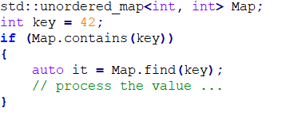
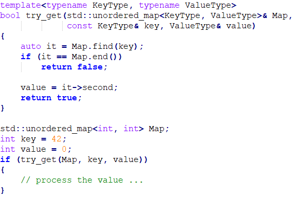

Posted on 2022-06-11
Public Service Announcement: Do not use std::unordered_map’s contains() from performance POV. If you use contains() or count() to check a key exists and then find the value for further processing, you incur the cost of double lookups!

The solution is to use try_get(). It is a shame that std::unordered_map does not have try_get() while it has try_emplace() since C++17. Even .NET Dictionary class has TryGetValue(). Fortunately, it is not difficult to implement try_get() as a free function using std::unordered_map’s find().
